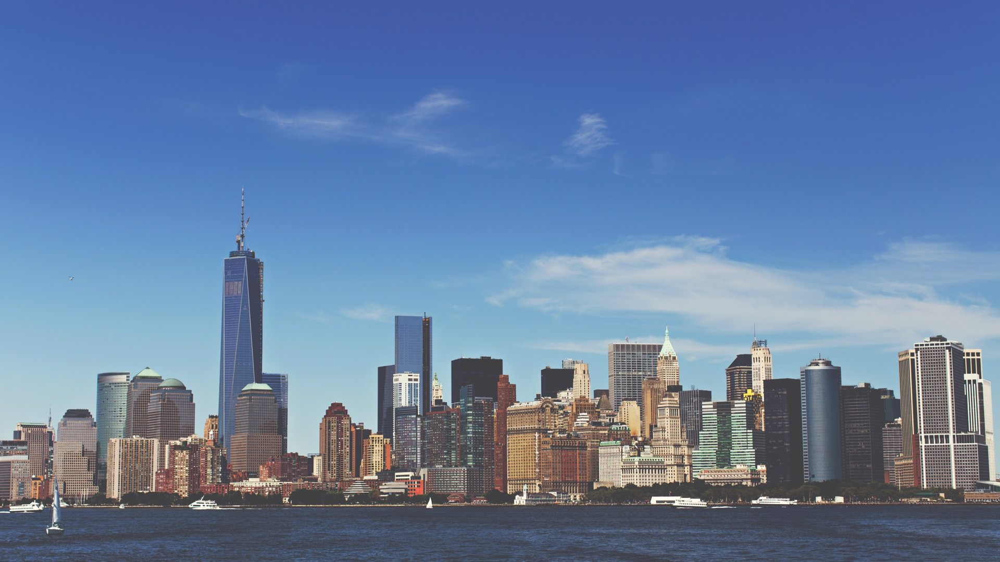

美國
美國是一個多元文化的國家，擁有豐富的歷史背景和多樣的旅遊景點。作為世界上最大的經濟體之一，美國的城市和景觀展現了不同的文化和生活方式，從繁華的都市到壯麗的自然風光，每個地方都吸引著無數遊客。
以下是一些主要的旅遊景點以及它們的歷史和文化詳細介紹：
旅遊景點

紐約市
歷史:
紐約市成立於1624年，最初是一個荷蘭殖民地，被稱為新阿姆斯特丹。1664年，英國接管，改名為紐約。作為美國的經濟、文化和金融中心，紐約市的歷史見證了無數的移民潮和社會變遷。
文化：
紐約市是一個多元文化的熔爐，融合了來自世界各地的文化和藝術。這裡擁有世界一流的博物館、劇院和音樂場所，如大都會藝術博物館和百老匯。
景點：
1. 自由女神像 ：
象徵自由和民主，於1886年建成，是美國著名的地標之一。
2. 中央公園 ：
這一城市綠洲提供5公里的步道、湖泊和花園，是當地居民和遊客放鬆身心的理想場所。
3. 時代廣場 ：
被稱為「世界的十字路口」，以燈光和繁華的商業著稱，是觀光和娛樂的集中地。

黃石國家公園
歷史:
黃石國家公園成立於1872年，是美國第一個國家公園，也是世界上第一個國家公園。這裡擁有獨特的地熱特徵和多樣的生態系統，吸引著早期的探險家和自然愛好者。
文化：
黃石公園不僅是自然愛好者的天堂，還是美國國家公園文化運動的象徵。這裡的保護和管理啟發了世界各地的國家公園體系。
景點：
1. 老忠實間歇泉 ：
公園內最著名的間歇泉，每隔約90分鐘便會噴發，吸引大量遊客觀賞。
2. 彩池 ：
世界上最大的熱泉之一，以其繽紛的色彩而著稱，展現了細菌和熱水的奇妙組合。
3. 大棕熊和灰狼觀察 ：
這裡的野生動物觀察機會眾多，吸引著希望見識自然生態的遊客。

大峽谷國家公園
歷史:
大峽谷國家公園成立於1919年，位於亞利桑那州，是世界七大自然奇觀之一。該地區由科羅拉多河數百萬年沖刷而成，形成了壯麗的地貌。
文化：
大峽谷不僅是自然美景，也具有文化意義。這裡是美國印第安人的故鄉，許多部落對這片土地具有深厚的文化和精神連結。
景點：
1. 南緣 ：
遊客最常訪問的地區，設有觀景台和步道，可欣賞到日出和日落的壯觀景色。
2. 北緣 ：
相對較少被遊客踏足，提供更寧靜的環境，是徒步旅行愛好者的理想選擇。
3. 直升機觀光 ：
遊客可以選擇乘坐直升機從空中俯瞰大峽谷，俯瞰這一自然奇觀的壯觀。